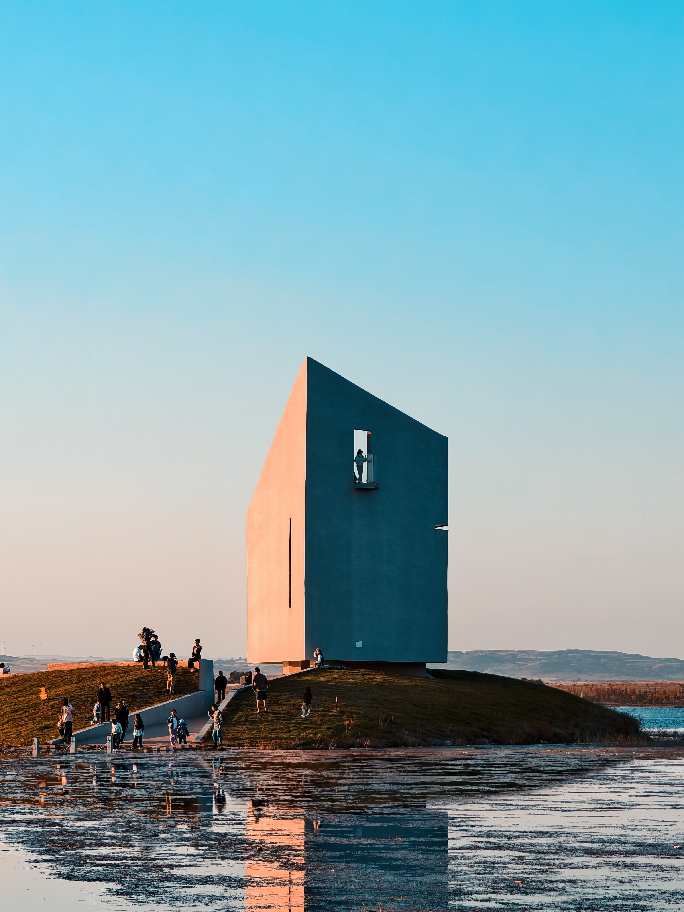
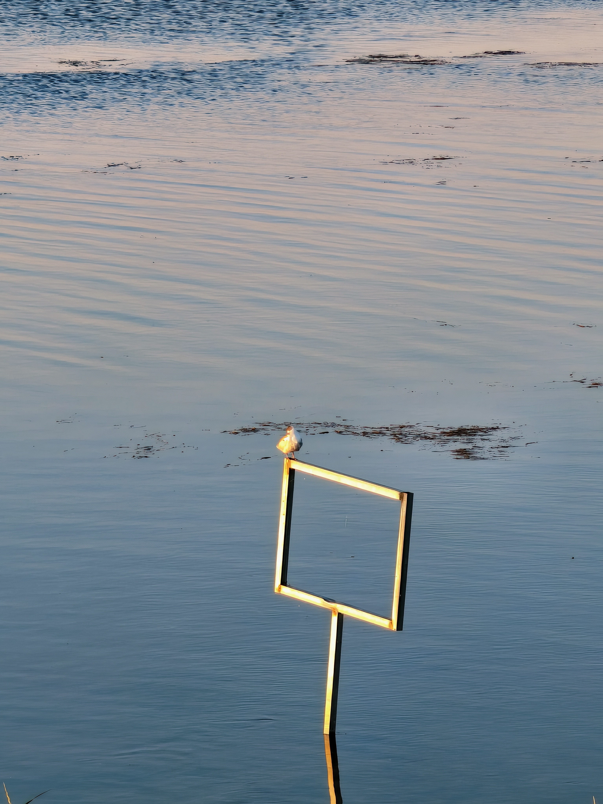

湖中岛


于湖屿之间，宠辱皆忘
为了登上湖中岛，代价就是趟过被水淹没的鹅卵石。没有第二个人。所以机位都是自己找的，然后点击延时拍摄。所以对不上焦什么的，是正常的。
远看这个水泥混凝土的怪物很美，但是不知是落日的灼烧还是湖边的湿气，更或者二者兼有，壁上爬满了水黾，构成了有机蛋白质的躯壳。湖水很冰，一条冻僵的狗的幼崽静静的窝在鹅卵石上，等待着被分解，或者被人围观感叹。鸭子，水鸟，潜入水面，掠过湖面，都打破了落日在水上晕撒的粉色，阵阵涟漪。
这里不是自然。相反，无处不在的人和建筑都在彰显着自己，向天际线看去，也有大风车的白色不断轮回着挑起天边。也或许，很久以后，水黾的吸附起了效果，风蚀的印刻变得显著，这个怪物终将倒塌，成为湖底的不起眼的石土，然后湖水蒸干，再也没有印记了。